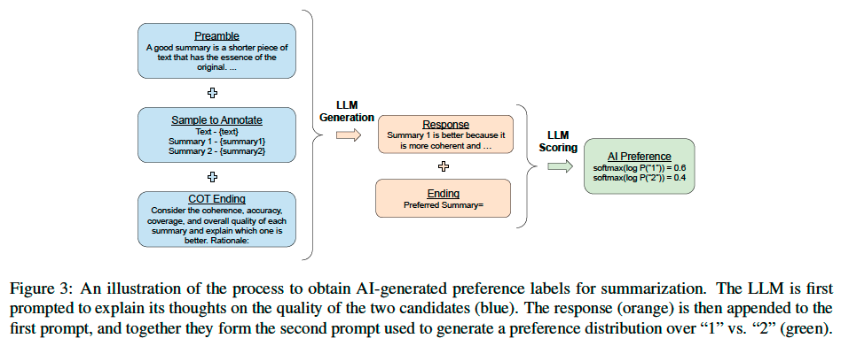
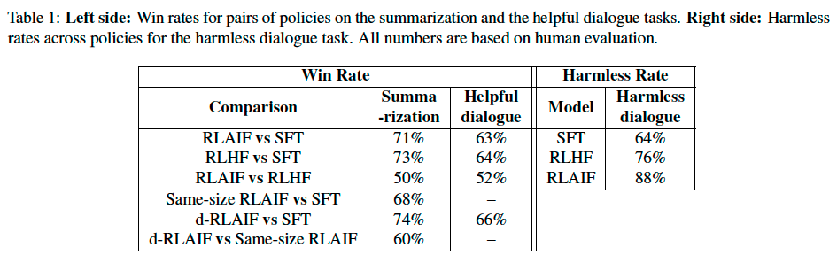
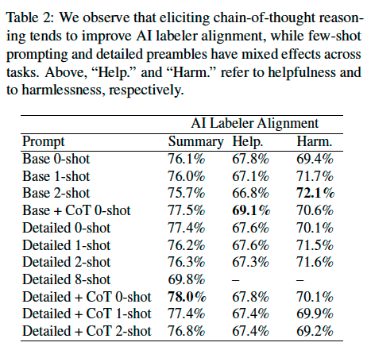

RLAIF vs. RLHF#
Note
RL from AI Feedback (RLAIF) offers a promising alternative that trains the reward model (RM) on preferences generated by an off-the-shelf LLM. Our results suggest that RLAIF can achieve performance on-par with using human feedback, offering a potential solution to the scalability limitations of RLHF.
Methodology#
Preference Labeling with LLMs#
Given a piece of text and two candidate responses, the “off-the-shelf” LLM is asked to rate which response is preferred. The prompt is structured as follows:
Preamble - Introduction and instructions describing the task
Few-shot exemplars (optional) - An example input context, a pair of responses, a chain-of-thought rationale (optional), and a preference label
Sample to annotate - An input context and a pair of responses to be labeled
Ending - The ending text to prompt the LLM (e.g. “Preferred Response=”)
After the prompt is given to the LLM, we extract the log-probabilities
of generating the tokens “1” and “2” and compute
the softmax to obtain a preference distribution.

Addressing Position Bias
The order in which candidates are shown to an LLM can
bias which candidate it prefers. To mitigate the effect of position bias, two inferences are
made for every pair of candidates, where the order in which
candidates are presented to the LLM is reversed for the second inference. The results from both inferences are then
averaged to obtain the final preference distribution.
Eliciting CoT
We experiment with eliciting chain-of-thought (CoT) reasoning from our AI labelers through a two-step inference procedure:
We replace the Ending of the standard prompt with a sentence asking for thoughts and explanation (e.g. “Consider the coherence, accuracy, coverage, and overall quality of each summary and explain which one is better. Rationale:”)
Decode a response from the LLM. Then, we concatenate the original prompt, the response, and the standard Ending string together, and follow the aforementioned scoring procedure to obtain a preference distribution.
Reinforcement Learning from AI Feedback#
Canonical RLAIF
A reward model (RM) is trained on the LLM-generated preference labels. Since our approach produces soft labels (e.g. [0.6, 0.4]), we train the RM with a cross-entropy loss on the softmax of the scores generated by the RM:
Direct-RLAIF (D-RLAIF)
One issue with RLAIF is that the reward model may become “stale” as the policy is trained.
We introduce direct-RLAIF (d-RLAIF) - a simple alternative to canonical RLAIF that directly uses LLM feedback as the reward signal in RL. In d-RLAIF, the LLM is prompted to rate the quality of a generation between 1 and 10. A prompt instructs the LLM on how to rate a generation. Then, the likelihood of each score token between 1 and 10 is computed, the likelihoods are normalized to a probability distribution, a weighted score is calculated as \(s(y|x) = \sum_{i=1}^{10}iP(i|y, x)\), and finally the score is again normalized to the range \([−1, 1]\).
Evaluation#
We evaluate our results with three metrics - AI Labeler Alignment, Win Rate, and Harmless Rate.
AI Labeler Alignment measures the accuracy of AI-labeled preferences with respect to human preferences. (a soft AI-labeled preference is first converted to a binary representation, e.g. [0.6, 0.4] → [1, 0])
Win Rate evaluates the end-to-end quality of two policies by measuring how often one policy is preferred by human annotators over another.
Harmless Rate measures the percentage of responses that are considered harmless by human evaluators.
Results#
RLAIF vs. RLHF#
RLAIF achieves performance gains on par with or better than RLHF on all three tasks.

We observe that RLAIF and RLHF policies tend to generate longer responses than the SFT policy, which may bias human evaluation. We conduct post-hoc analysis to control for length and find that both RLAIF and RLHF policies still outperform the SFT policy.
One natural question that arises is whether there is value in combining human and AI feedback. We experimented with combining both types of feedback but did not see an improvement beyond using human feedback alone.
Prompting Techniques#
